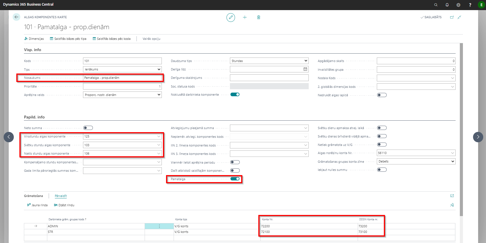
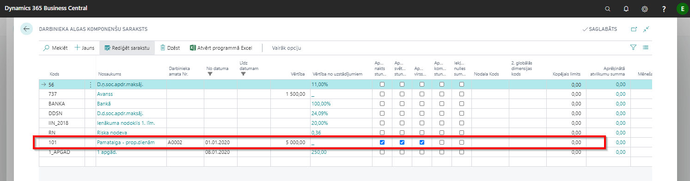
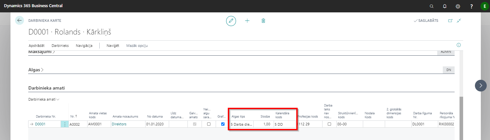
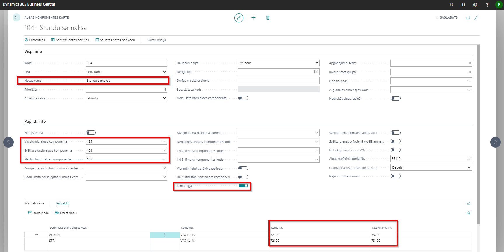
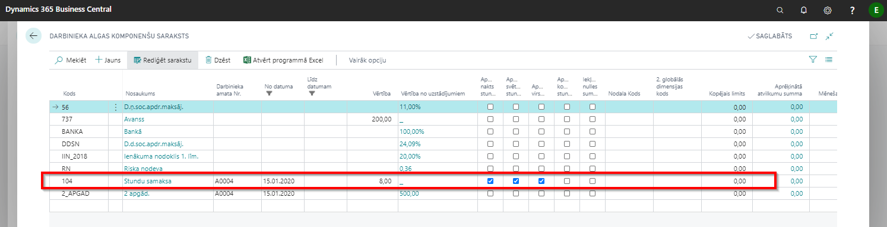
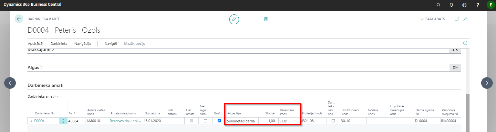
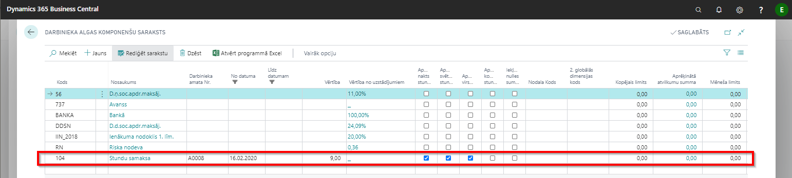
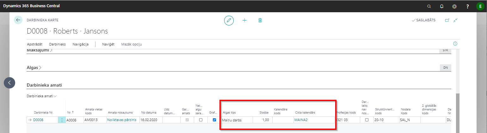
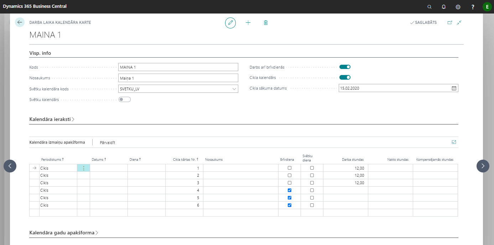
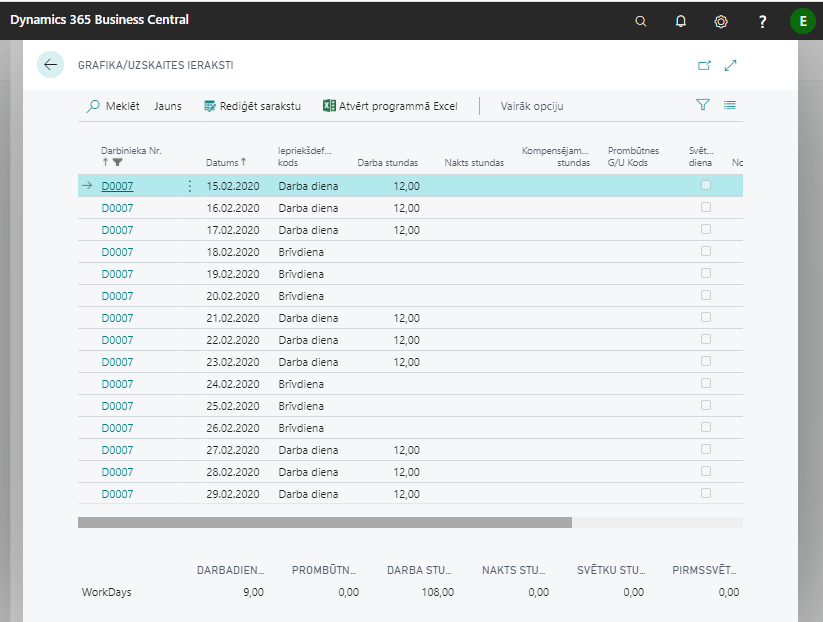

Dažādu aprēķina veidu uzkonfigurēšana – piemēri
Pamatalga proporcionāli nostrādātajām dienām, normāls darba laiks
- Pamatalgas komponente: Lomu centrs - Administrēšana - Algas komponentes

- Darbinieka kartiņa: Apstrādāt - Darbinieka algas komponentes. Darbinieka pamatalgas komponente tiek ievadīta ar Personāla rīkojumu vai Darba līguma kartiņas palīdzību.

Algas tips (Darbinieka kartiņas cilnē Darbinieka amati) – iespējams izmainīt manuāli pēc nepieciešamības. Algas tips tiek ievadīts ar Personāla rīkojumu vai Darba līguma kartiņas palīdzību.
Algas tips tiek izmantots, lai saliktu virsstundu uzstādījumus korektam virsstundu aprēķinam.
Dotajā piemērā darbiniekiem, kuriem algas tips ir norādīts 5 Darba dienu nedēļa, virsstundas tiks aprēķinātas, salīdzinot nostrādāto stundu skaitu ar stundu skaitu pēc normālā darba laika kalendāra (5x8). Atzīme Proporcionāli nozīmē, ka, rēķinot virsstundas tiks ņemts vērā pieņemšanas/atbrīvošanas datums un prombūtnes.

Kalendāra kods - kalendārs tiek izmantots, lai aprēķinātu plānotās dienas un stundas mēnesī, kā arī darba dienu un stundu aprēķinos – gadījumos, kad nelieto individuālos grafikus un uzskaiti. Darbinieka kalendāra kods tiek ievadīts ar personāla rīkojumu palīdzību.
Slodze - paredzēts atskaites Darbs-2 veidošanas vajadzībām.
Stundu samaksa, summētais darba laiks
- Pamatalgas komponente: Lomu centrs - Administrēšana - Algas komponentes

- Darbinieka kartiņa: Apstrādāt - Darbinieka algas komponentes. Darbinieka pamatalgas komponente tiek ievadīta ar Personāla rīkojumu vai Darba līguma kartiņas palīdzību.

- Algas tips (Darbinieka kartiņas cilnē Darbinieka amati). Algas tips tiek izmantots, lai saliktu virsstundu uzstādījumus korektam virsstundu aprēķinam.
Dotajā piemērā darbiniekiem, kuriem algas tips ir norādīts Summētais darba laiks, virsstundas tiks aprēķinātas par pārskata periodu – 1 mēnesi. Tiks salīdzināts nostrādāto stundu skaits ar stundu skaitu pēc normālā darba laika kalendāra (5x8) 1 mēnešu periodā. Atzīme Proporcionāli nozīmē, ka, rēķinot virsstundas tiks ņemts vērā pieņemšanas/atbrīvošanas datums un prombūtnes.

Maiņu darbs
- Darbinieka kartiņa: Apstrādāt - Darbinieka algas komponentes. Darbinieka pamatalgas komponente tiek ievadīta ar Personāla rīkojumu vai Darba līguma kartiņas palīdzību.

- Algas tips (Darbinieka kartiņas cilnē Darbinieka amati). Algas tips tiek izmantots, lai saliktu virsstundu uzstādījumus korektam virsstundu aprēķinam.
Dotajā piemērā darbiniekiem, kuriem algas tips ir norādīts Maiņu darbs, virsstundas tiks aprēķinātas, salīdzinot dienā nostrādāto stundu skaitu ar 8.

- Kalendāra kods - izvēlas maiņu darbam iepriekš nodefinētu kalendāru (Lomu centrs - Administrēšana - Darba laika kalendāri).

- Grafiks/Uzskaite - tiek izveidots, pamatojoties uz izvēlēto cikla kalendāru un cikla kārtas Nr. Izvēlētais cikla kārtas Nr. norāda, ar kuru cikla kārtu sistēma sāks veidot Grafiku/Uzskaiti.

Dotajā piemērā izvēlēts augstāk attēlotais kalendārs MAINA 1.